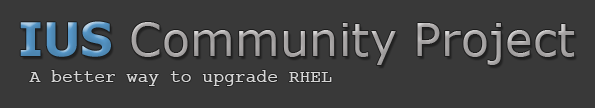

|  |
Note
As of September 24, 2015, ius.io has replaced this website. This site will stay up for about 30 days for archive purposes then redirect to the new site. The old site code will remain available at the sphinx_iuscommunity Github repo.
Contents
On 2013-09-12, Red Hat released a product called Software Collections, also know as SCL. The front page has this statement:
Software Collections give you power to build, install, and use multiple
versions of software on the same system, without affecting system-wide
installed packages.
Here is our mission statement for the IUS Community project:
The IUS Community Project is aimed at providing up to date and regularly
maintained RPM packages for the latest upstream versions of PHP, Python,
MySQL and other common software specifically for Red Hat Enterprise Linux.
IUS can be thought of as a better way to upgrade RHEL, when you need to.
Both projects seek to solve the same problem, but there are several important differences in execution.
Usage of IUS packages are the same or very close to stock packages:
php -v
service mysqld start
mysql -V
python2.7 -V
Usage of SCL packages are very different from stock packages:
scl enable php54 "php -v"
service mysql55-mysqld start
scl enable mysql55 "mysql -V"
scl enable python27 "python -V"
|
Quick Links |
Contact |
| Hosted by |